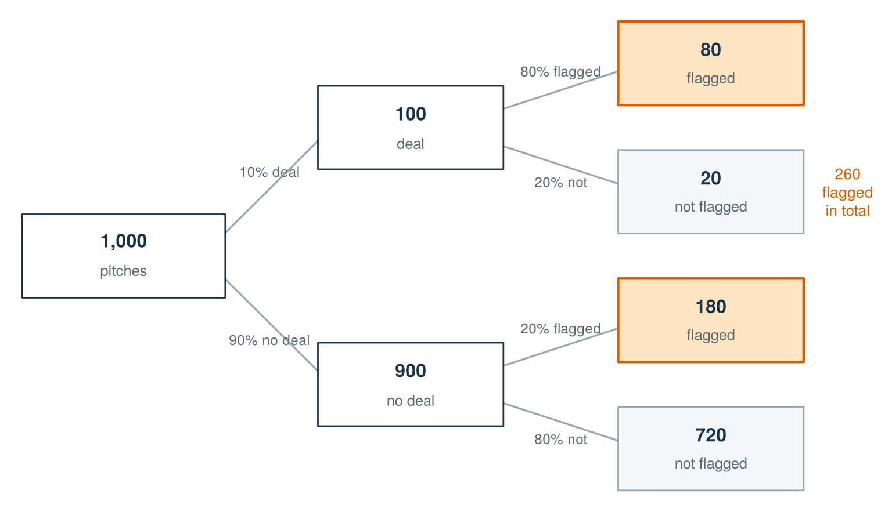
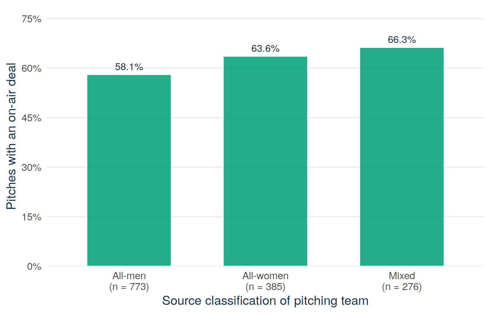
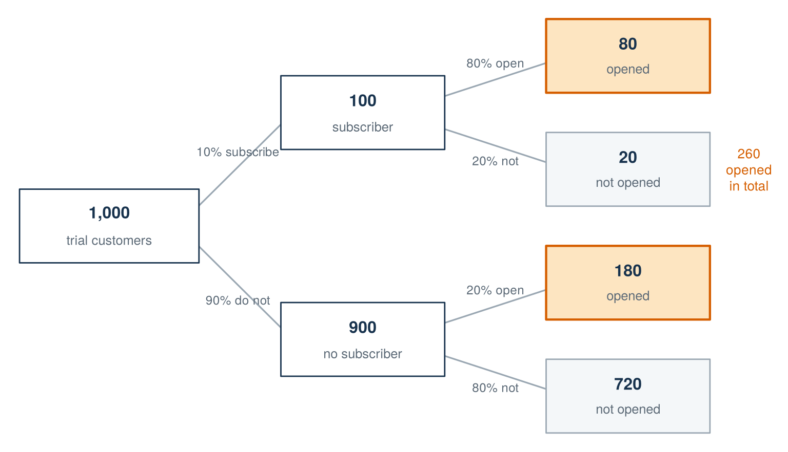
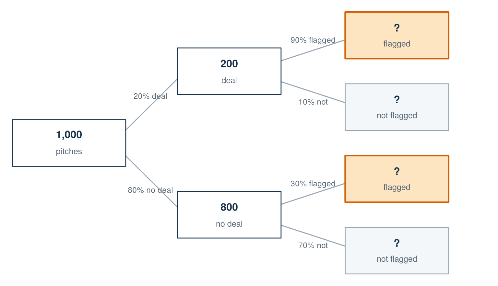
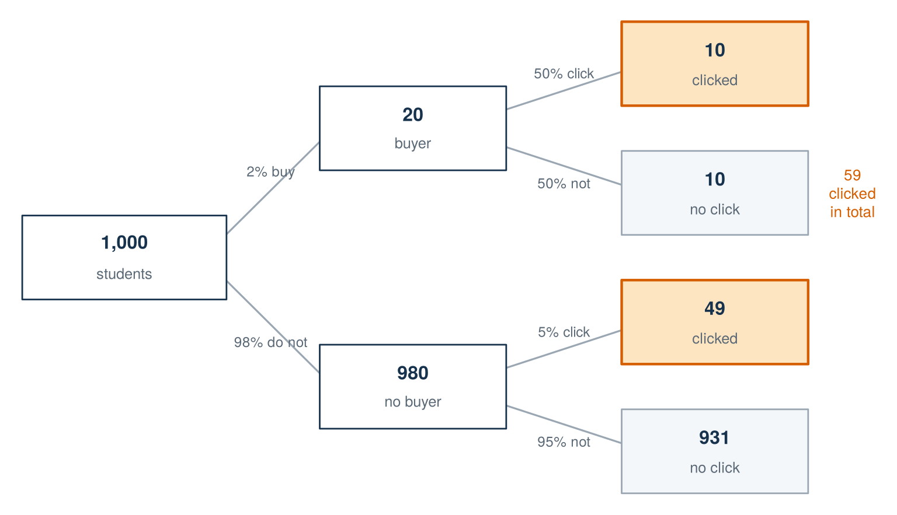

sharks <- read.csv("data/shark_tank_teaching.csv", stringsAsFactors = FALSE)
D <- sharks$deal_on_show == 1 # on-air deal
L <- sharks$season >= 9 # late season: Seasons 9-16
table(deal = D, late = L)Lecture 4: Conditioning, Bayes’ rule, and independence
By the end of Lecture 4, you can
- calculate conditional probabilities and say which group each one refers to,
- rebuild an overall probability from the rates of separate groups,
- update a probability after new evidence with Bayes’ rule,
- check whether two events are independent and tell this apart from disjoint.
Driving question
New information changes our assessment of chances. If you know that a pitch comes from a late season, the chance of a deal changes. The difficulty is to read such a chance the right way round. “Deals among late-season pitches” and “late-season pitches among deals” are different numbers.
You will pitch in a late season. Which of these two sentences tells you how likely a deal is?
- A. 68.8% of late-season pitches reached an on-air deal.
- B. 57.3% of the pitches that reached a deal came from the late seasons.
Before class
Do all the preparation below before class.
Video preparation
Watch these short videos from MIT OpenCourseWare, Introduction to Probability, before class. Be ready to identify the reference class in a conditional probability, to explain why turning a condition around changes the denominator, and to say what independence of two events means.
- Conditional Probabilities (8:59)
- A Radar Example and Three Basic Tools (10:59)
- Bayes’ Rule (4:27)
- Independence of Two Events (6:10)
Extra, if you want more explanation:
- A Die Roll Example (5:02)
- The Multiplication Rule (6:16)
- Total Probability Theorem (5:24)
The videos explain key ideas in another way and can use a different notation. The lecture material and its notation always come first.
Warm up. Lecture 2 built the counts table for deals and seasons from the Shark Tank file. Build it again. The events \(D\) (on-air deal) and \(L\) (late season) are defined as in Lecture 2:
Then compare, in words only:
- “Among pitches in Seasons 9 to 16, what proportion reached an on-air deal?”
- “Among pitches that reached an on-air deal, what proportion came from Seasons 9 to 16?”
For both questions, the number on top of the fraction is the same: the late-season pitches that reached a deal. The questions differ in the group that you divide by. Before class, decide for each question which total of your table goes underneath: the total of the late-season column, or the total of the deal row. Finally, answer one question on the videos: in words, what does it mean that two events \(A\) and \(B\) are independent?
Check your preparation
- The first question divides by the total of the late-season column, 734 pitches: \(505/734\approx 0.688\), or 68.8%.
- The second question divides by the total of the deal row, 882 pitches: \(505/882\approx 0.573\), or 57.3%.
The same 505 pitches give two different shares because the group you divide by differs. Two events are independent when knowing that one occurred does not change the probability of the other, for example \(P(A\mid B)=P(A)\).
If fractions or event notation are unfamiliar, review Mathematics Refresher: sets and event notation and fractions and rearranging equations.
Predict. Answer this question before you come to class. A venture fund receives many pitches by email, and only 10% of them end in a deal with the fund. To save time, the fund tests an AI tool that marks some pitches as promising. We call such a mark a flag. Among the pitches that later reach a deal, the tool flags 80%. Among the pitches that do not reach a deal, it also flags 20%. Now the tool flags one new pitch. How likely is it that this pitch reaches a deal: near 80%, near 50%, or near 30%? Do not calculate. Choose one answer and write down your reason in one sentence. You find the answer in the section “Bayes’ rule: count first, formula second”.
Lecture material
Lecture 2 gave each event one probability, computed from all pitches in the file. In practice you usually know something extra about a case: the season of a pitch, the sector of a startup, or a signal from a screening tool. Such information should change your assessment of the chances. This lecture shows how to update a probability when new information arrives, and how to avoid reading the update the wrong way round, which is the trap in the driving question.
The lecture builds four tools on one counts table. Conditional probability gives the chance of an event within a group. The law of total probability rebuilds an overall chance from the chances within groups. Bayes’ rule turns a conditional probability around. Independence describes the case in which new information does not change the chance at all.
Start with a founder’s question
A founder hears that most deals on the show come from the later seasons. The founder concludes that a pitch in a later season is likely to end in a deal. Is that the same statement? Here are two sentences about the 1,441 pitches in the Shark Tank file:
- Sentence A. “68.8% of late-season pitches reached an on-air deal.”
- Sentence B. “57.3% of the pitches that reached a deal came from the late seasons.”
Both sentences use the same 505 records: the late-season pitches that reached a deal. But they answer different questions and give different numbers. This lecture shows what each sentence claims. Later, the lecture uses the same idea in another situation: a venture fund that screens the pitches it receives with an AI tool.
One table, five probabilities
The starting point is the counts table from Lecture 2. The code builds the events \(D\) (on-air deal, deal_on_show) and \(L\) (late season, season 9 or higher) as before. Run it yourself:
sharks <- read.csv("data/shark_tank_teaching.csv", stringsAsFactors = FALSE)
D <- sharks$deal_on_show == 1 # on-air deal
L <- sharks$season >= 9 # late season: Seasons 9-16
table(deal = D, late = L) late
deal FALSE TRUE
FALSE 330 229
TRUE 377 505The output has two rows (deal FALSE or TRUE) and two columns (late FALSE or TRUE). Each number counts the pitches with that combination. For example, 505 pitches are from a late season and reached a deal. The same table with labels and with row and column totals:
| Early (\(L^c\), Seasons 1 to 8) | Late (\(L\), Seasons 9 to 16) | Total | |
|---|---|---|---|
| No deal (\(D^c\)) | 330 | 229 | 559 |
| Deal (\(D\)) | 377 | 505 | 882 |
| Total | 707 | 734 | 1441 |
Each of the five quantities below is a fraction of two counts. Before you read on, find in the table the count that goes on top and the count that goes underneath.
- \(P(D)\), the probability that a pitch reached a deal.
- \(P(L)\), the probability that a pitch is from the late seasons.
- \(P(D\cap L)\), the probability that a pitch is from the late seasons and reached a deal.
- Among late-season pitches, the share that reached a deal.
- Among pitches that reached a deal, the share that came from the late seasons.
Check your denominators
- \(P(D)\): 882 deal records out of all 1,441 records.
- \(P(L)\): 734 late-season records out of all 1,441 records.
- \(P(D\cap L)\): 505 late-season deal records out of all 1,441 records.
- Among late-season pitches, the share with a deal: 505 late-season deal records out of the 734 late-season records.
- Among deal pitches, the share from the late seasons: 505 late-season deal records out of the 882 deal records.
The first three all divide by 1,441, the number of all pitches. The last two divide by a part of the table. A share within a part of the table is called a conditional probability. The next section defines it.
Conditional probability
MIT explanation (review): 02.2 Conditional Probabilities.
A probability describes how uncertain you are, given what you know. When you learn something new, some outcomes are no longer possible. If you know that a pitch comes from a late season, the early-season pitches can no longer be the one you are looking at. A good probability model drops these outcomes and spreads the full probability of 1 over the outcomes that are left. This updating is what items 4 and 5 above ask for: what is the probability of one event if you already know that another event happens?
You answer such a question in two steps. First, keep only the pitches that match what you know, for item 4 the 734 late-season pitches. This group is called the reference class. Second, take the share of the reference class in which the event happens. For item 4, 505 of the 734 late-season pitches reached a deal. Restricting attention to a reference class is called conditioning on it. Figure 4.1 shows both steps as areas.
See the R code for this figure
library(ggplot2)
sharks <- read.csv("data/shark_tank_teaching.csv", stringsAsFactors = FALSE)
D <- sharks$deal_on_show == 1
L <- sharks$season >= 9
p_early <- mean(!L) # width of the early column
rate_early <- mean(D[!L]) # deal rate among early pitches
rate_late <- mean(D[L]) # deal rate among late pitches
late_among_deals <- mean(L[D]) # share of late pitches among deals
pct <- function(x) paste0(format(round(100 * x, 1), nsmall = 1), "%")
panels <- c("1. All 1,441 pitches",
"2. Given L: keep the 734 late pitches",
"3. Given D: keep the 882 deal pitches")
rects <- data.frame(
panel = factor(panels[c(1, 1, 1, 1, 2, 2, 3, 3)], levels = panels),
xmin = c(0, p_early, 0, p_early, 0, 0, 0, 1 - late_among_deals),
xmax = c(p_early, 1, p_early, 1, 1, 1, 1 - late_among_deals, 1),
ymin = 0,
ymax = c(1, 1, rate_early, rate_late, 1, rate_late, 1, 1),
period = c("early", "late", "early", "late", "late", "late", "early", "late"),
solid = c(FALSE, FALSE, TRUE, TRUE, FALSE, TRUE, TRUE, TRUE)
)
labels <- data.frame(
panel = factor(panels[c(1, 1, 1, 1, 2, 2, 3, 3)], levels = panels),
x = c(p_early / 2, (1 + p_early) / 2, p_early / 2, (1 + p_early) / 2,
0.5, 0.5, (1 - late_among_deals) / 2, 1 - late_among_deals / 2),
y = c(rate_early / 2, rate_late / 2, (1 + rate_early) / 2,
(1 + rate_late) / 2, rate_late / 2, (1 + rate_late) / 2, 0.5, 0.5),
text = c("deal,\nearly\n377", "deal,\nlate\n505",
"no deal,\nearly\n330", "no deal,\nlate\n229",
paste0("deal\n505 of 734\n= ", pct(rate_late)),
paste0("no deal\n229 of 734\n= ", pct(1 - rate_late)),
paste0("early\n377 of 882\n= ", pct(1 - late_among_deals)),
paste0("late\n505 of 882\n= ", pct(late_among_deals))),
colour = c("white", "white", "#17324D", "#17324D",
"white", "#17324D", "white", "white")
)
ggplot() +
geom_rect(data = rects,
aes(xmin = xmin, xmax = xmax, ymin = ymin, ymax = ymax,
fill = period, alpha = solid),
colour = "white", linewidth = 0.6) +
geom_text(data = labels, aes(x = x, y = y, label = text),
colour = labels$colour, size = 3.1, lineheight = 0.9) +
facet_wrap(~ panel, nrow = 1) +
scale_fill_manual(values = c(early = "#009E73", late = "#D55E00")) +
scale_alpha_manual(values = c(`FALSE` = 0.25, `TRUE` = 0.9)) +
coord_fixed(expand = FALSE) +
theme_void(base_size = 11) +
theme(legend.position = "none",
strip.text = element_text(colour = "#17324D", face = "bold",
margin = margin(b = 6)),
panel.border = element_rect(colour = "#17324D", fill = NA,
linewidth = 0.8),
panel.spacing = unit(1.2, "lines"))
Read Figure 4.1 from left to right. Panel 1 shows what you know before any extra information. The square stands for all 1,441 pitches, so its area is 1. The deals are split across both periods: 377 early deals and 505 late deals. Panel 2 shows what happens when you learn that the pitch is from a late season. The early column drops out, because it is no longer possible. What is left, the late column, is stretched to fill the whole square, so the probabilities add up to 1 again. The solid part now covers 68.8% of the square. That is the deal probability given a late season. Panel 3 conditions on the other event. It keeps only the 882 deals and stretches them to fill the square. The late part now covers 57.3%. Panels 2 and 3 start from the same 505 late-season deals but divide them by different groups, so they give different numbers.
The symbol for this is a vertical bar, read as “given”. Item 4 is written \(P(D\mid L)\), “the probability of \(D\) given \(L\)”. Item 5 is written \(P(L\mid D)\). The event after the bar is always the reference class.
Definition
Conditional probability. The probability that event \(A\) happens, given that event \(B\) happens. For events \(A\) and \(B\) with \(P(B)>0\),
\[P(A\mid B)=\frac{P(A\cap B)}{P(B)}.\]
In words: keep only the outcomes in \(B\), then take the share of them that are also in \(A\).
The formula does the same two steps as the count. For item 4,
\[P(D\mid L)=\frac{P(D\cap L)}{P(L)} =\frac{505/1441}{734/1441}=\frac{505}{734}.\]
The reference class gives the denominator. Dividing by \(P(B)\) rescales the probabilities inside \(B\) so that they add up to 1 again. This is the stretching step from panel 1 to panel 2 of Figure 4.1.
For a fixed event \(B\), conditional probabilities follow all three rules from Lecture 2. So every rule that Lecture 2 derived from them also holds inside the reference class. The condition is that the event after the bar stays the same in the whole calculation. Two examples follow. The first is the complement rule, \(P(A^c\mid B)=1-P(A\mid B)\). Among late-season pitches, the share without a deal is
\[P(D^c\mid L)=1-P(D\mid L)=1-\frac{505}{734}=\frac{229}{734}\approx 0.312.\]
The second is the addition rule. For two events \(A\) and \(C\) and the same reference class \(B\),
\[P(A\cup C\mid B)=P(A\mid B)+P(C\mid B)-P(A\cap C\mid B).\]
Some calculations mix different reference classes, for example \(P(A\mid B)\) and \(P(A\mid B^c)\). For these you need the law of total probability, which a later section explains.
Example 4.1 (Worked example: what each of the two sentences means) Sentence A asks about \(P(D\mid L)\). Conditioning on \(L\) means that you hide everything except the Late column:
| Early | Late (\(L\)) | |
|---|---|---|
| No deal | · | 229 |
| Deal | · | 505 |
| Total | · | 734 |
Within that one column, 505 of 734 records are deals:
\[P(D\mid L)=\frac{505}{734}\approx 0.688.\]
Sentence B asks about \(P(L\mid D)\). Conditioning on \(D\) means that you hide everything except the Deal row:
| Early | Late | Total | |
|---|---|---|---|
| No deal | · | · | · |
| Deal (\(D\)) | 377 | 505 | 882 |
Within that one row, 505 of 882 records are late-season:
\[P(L\mid D)=\frac{505}{882}\approx 0.573.\]
The numerator is 505 in both calculations: the same cell of the table. The denominators differ, and so do the questions. Sentence A looks only at the 734 late-season pitches. Sentence B looks only at the 882 deal pitches.
To match a sentence with its number, look at the words after “of” or “among”. Sentence A, “68.8% of late-season pitches reached an on-air deal”, names the late-season pitches as the group, so it is \(P(D\mid L)=505/734\approx 68.8\%\). Sentence B, “57.3% of the pitches that reached a deal came from the late seasons”, names the deals as the group, so it is \(P(L\mid D)=505/882\approx 57.3\%\). A report that says “68.8% of deal pitches came from late seasons” has put the right number into the wrong sentence.
The same two numbers in R. In the code, D and L are lists of 1,441 TRUE/FALSE values, one for each pitch. Square brackets select entries: D[L] keeps the deal values of only those pitches where L is TRUE, so it is the list of 734 late-season pitches. This is the step that keeps only the reference class. mean() of TRUE/FALSE values is the share of TRUE values, just as the mean of a 0/1 variable is its share of 1s. So mean(D[L]) is the share of deals among late-season pitches. In the same way, L[D] keeps the 882 deal pitches and mean(L[D]) is the share of them from a late season. The first output counts the size of each reference class, with sum(), which counts the TRUE values. The second output gives the two shares:
D <- sharks$deal_on_show == 1
L <- sharks$season >= 9
c(n_late = sum(L), n_deal = sum(D))n_late n_deal
734 882 c(
P_deal_given_late = mean(D[L]),
P_late_given_deal = mean(L[D])
)P_deal_given_late P_late_given_deal
0.6880109 0.5725624 R confirms both reference classes (734 late-season pitches and 882 deals) and both shares: 0.688 for Sentence A and 0.573 for Sentence B. For comparison, the deal rate among all pitches is \(882/1441\approx 0.612\). So late-season pitches have a deal rate about 7.6 percentage points higher than all pitches together.
The multiplication rule
MIT explanation (review): 02.6 The Multiplication Rule.
Often you know a rate within a group and the size of the group, but not how often both things happen together. A bank, for example, may know that 30% of its loans go to small businesses and that 5% of those loans are not repaid. The share of all loans that are small-business loans and not repaid is then \(0.05\times 0.30=0.015\), or 1.5% of all loans. The multiplication rule makes this step general.
The probability of an intersection, \(P(A\cap B)\), is also called a joint probability: both events happen together. Multiply both sides of the definition of conditional probability by \(P(B)\). The result is the multiplication rule. It builds a joint probability from a conditional one:
\[P(A\cap B)=P(A\mid B)\,P(B).\]
The same holds with the roles of \(A\) and \(B\) exchanged, because \(A\cap B\) and \(B\cap A\) are the same event:
\[P(A\cap B)=P(A\mid B)\,P(B)=P(B\mid A)\,P(A).\]
This line explains why the two sentences share a numerator and have different denominators. Both products equal \(505/1441\), but each one uses a different reference class.
Try it: verify the joint probability two ways
Use the counts table of the section “One table, five probabilities” to check the equation above for \(D\) (on-air deal) and \(L\) (late season).
Step 1 (given). The direct way: \(P(D\cap L)=505/1441\approx 0.350\).
Step 2 (given). The first product: \(P(D\mid L)\,P(L)=\dfrac{505}{734}\cdot\dfrac{734}{1441}\). The 734 cancels. Cancel it and confirm that \(505/1441\) is left.
Step 3 (you). Write the second product, \(P(L\mid D)\,P(D)\), as two fractions from the table. Show that it also equals \(505/1441\).
Step 4 (you). Confirm all three ways in R.
Check your answer
\(P(L\mid D)\,P(D)=\dfrac{505}{882}\cdot\dfrac{882}{1441}=\dfrac{505}{1441} \approx 0.350\). The 882 cancels, just as the 734 did.
The R code computes the joint probability in the three ways. mean(D & L) is the share of pitches that are both deals and late-season. The other two lines multiply a conditional share by the share of its reference class. All three outputs are 0.350: 35% of all pitches are late-season deals, whichever way you compute it.
D <- sharks$deal_on_show == 1
L <- sharks$season >= 9
c(
direct_joint = mean(D & L),
cond_on_late_times_base = mean(D[L]) * mean(L),
cond_on_deal_times_base = mean(L[D]) * mean(D)
) direct_joint cond_on_late_times_base cond_on_deal_times_base
0.3504511 0.3504511 0.3504511 The multiplication rule is the building block of the next two tools. The law of total probability adds up several joint probabilities, and Bayes’ rule divides one joint probability by a total.
The law of total probability
MIT explanation (review): 02.7 Total Probability Theorem.
Data often come as rates for separate groups: the deal rate in each period of the show, the repayment rate in each segment of a loan portfolio, or the conversion rate in each sales channel. A decision may still need the overall rate. The law of total probability combines the group rates into one overall rate.
Lecture 2 introduced a partition: events that do not overlap and together cover every outcome. The early seasons and the late seasons are a partition of the pitches. You can rebuild an overall probability from the parts of a partition in three steps. Take the conditional probability of \(A\) within each part. Multiply it by the probability of that part, which gives a joint probability. Then add the joint probabilities.
Definition
Law of total probability. For a partition \(B_1,\ldots,B_k\) with every \(P(B_i)>0\),
\[P(A)=\sum_{i=1}^{k}P(A\mid B_i)\,P(B_i).\]
In words: the overall probability of \(A\) is a weighted average of its probabilities within the groups. The weight of each group is the probability of that group.
With only two groups, \(B\) and its complement \(B^c\), the sum has two terms:
\[P(A)=P(A\mid B)\,P(B)+P(A\mid B^c)\,P(B^c).\]
Example 4.2 (Worked example: rebuilding P(D) from the deal rates of the two periods) The early and late events \(L^c\) and \(L\) form a partition, so
\[ \begin{aligned} P(D)&=P(D\mid L^c)\,P(L^c)+P(D\mid L)\,P(L)\\ &=\frac{377}{707}\cdot\frac{707}{1441} +\frac{505}{734}\cdot\frac{734}{1441}\\ &=\frac{377+505}{1441}=\frac{882}{1441}\approx 0.612. \end{aligned} \]
Two kinds of number appear here. \(377/707\approx 0.533\) and \(505/734\approx 0.688\) are the deal rates within each period. \(707/1441\approx 0.491\) and \(734/1441\approx 0.509\) are the weights: the share of all pitches that falls in each period. The overall deal probability is a weighted average of the two rates. So it must lie between 0.533 and 0.688, and it is a little closer to the rate of the larger group.
In R, mean(D[!L]) is the deal rate among early pitches (!L means “not late”), and mean(!L) is the share of early pitches. The second line multiplies each rate by its weight and adds the two products:
D <- sharks$deal_on_show == 1
L <- sharks$season >= 9
c(
direct = mean(D),
from_periods = mean(D[!L]) * mean(!L) + mean(D[L]) * mean(L)
) direct from_periods
0.6120749 0.6120749 Both outputs are 0.612. Rebuilding the overall deal probability from the two periods gives exactly the share of deals among all pitches, as the law promises.
Panel 1 of Figure 4.1 shows the same calculation as areas. The width of each column is the probability of that period, the weight: 0.491 for the early and 0.509 for the late seasons. The height of the solid part is the deal rate within that period: 0.533 and 0.688. So the area of each solid part is width times height, which is a joint probability. For the late seasons this is \(0.509\times 0.688\approx 0.350\), and for the early seasons \(0.491\times 0.533\approx 0.262\). The two solid parts do not overlap, so \(P(D)\) is their total area, \(0.262+0.350=0.612\). In the figure you can also see why the overall rate lies between the two group rates. Flattening the two solid parts to one common height that keeps their total area gives a height of 0.612, below the late part and above the early part. The law of total probability returns in the next section, where it gives the denominator of Bayes’ rule.
Bayes’ rule: count first, formula second
MIT explanation (review): 02.8 Bayes’ Rule.
Many business decisions start from a signal: a flag from a screening tool, a positive review, or a click on an ad. The quality of a signal is usually described the other way round, as the share of good cases that show the signal. The decision needs the share of good cases among those that show the signal. Bayes’ rule turns the one into the other.
Return to the prediction question from before class. It is about another situation than the Shark Tank show, with invented numbers. A venture fund receives many pitches from founders by email. Most of them never lead to an investment: only 10% end in a deal with the fund. To save time, the fund uses an AI tool that reads each pitch and flags (marks) the pitches that it considers likely to reach a deal. A tool that sorts cases into two groups in this way is called a classifier. Three numbers describe it:
- the base rate: 10% of the pitches that the fund receives reach a deal,
- the sensitivity: among actual deals, 80% get flagged, \(P(\text{flag}\mid\text{deal})=0.80\),
- the false-positive rate: among non-deals, 20% still get flagged, \(P(\text{flag}\mid\text{no deal})=0.20\).
A pitch has just been flagged. How likely is a deal now: near 80%, 50%, or 30%? Count first, and use the formula afterwards.
Example 4.3 (Worked example: 1,000 imaginary pitches) Imagine 1,000 pitches and apply the three numbers to them one after the other, as in Figure 4.2.
- Split by the base rate. Of 1,000 pitches, 100 are deals and 900 are not.
- Flag the deals. Sensitivity 80%: of the 100 deals, 80 are flagged.
- Flag some non-deals too. False-positive rate 20%: of the 900 non-deals, 180 are flagged.
- Collect the flagged pitches. In total \(80+180=260\) pitches have a flag, and only 80 of them are deals:
\[P(\text{deal}\mid\text{flag})=\frac{80}{260}\approx 0.31.\]
The classifier finds 80% of deals, but fewer than a third of the flagged pitches are deals. The tree shows the reason. The 900 non-deals are a large group, so even a 20% false-positive rate produces 180 false flags. That is more than double the 80 true flags. A flag moves the deal probability from 10% to 31%. This is real evidence, but it is far from certainty.
See the drawing code (optional, not exam material)
# draw_count_tree() draws a tree of counts. The later trees in this
# lecture reuse it.
draw_count_tree <- function(root, root_label, mid, mid_labels, ends,
end_labels, branch_labels, side_text = "") {
old_par <- par(no.readonly = TRUE)
on.exit(par(old_par))
par(mar = c(0.2, 0.2, 0.2, 0.2))
plot(NA, xlim = c(0, 10), ylim = c(0.3, 9.7), axes = FALSE,
xlab = "", ylab = "", xaxs = "i", yaxs = "i")
draw_node <- function(x, y, top, bottom, fill = "white",
border = "#17324D", lwd = 1.4, w = 1.05, h = 0.78) {
rect(x - w, y - h, x + w, y + h, col = fill, border = border, lwd = lwd)
text(x, y + 0.26, top, font = 2, cex = 1.0, col = "#17324D")
text(x, y - 0.30, bottom, cex = 0.8, col = "#5B6976")
}
draw_branch <- function(x1, y1, x2, y2, label, above = TRUE) {
segments(x1, y1, x2, y2, col = "#9AA7B2", lwd = 1.6)
text((x1 + x2) / 2, (y1 + y2) / 2 + if (above) 0.32 else -0.32,
label, cex = 0.76, col = "#5B6976")
}
# branches first, then boxes on top
draw_branch(2.45, 5.35, 3.55, 7.15, branch_labels[1])
draw_branch(2.45, 4.65, 3.55, 2.85, branch_labels[2], above = FALSE)
draw_branch(5.65, 7.75, 6.95, 8.45, branch_labels[3])
draw_branch(5.65, 7.05, 6.95, 6.35, branch_labels[4], above = FALSE)
draw_branch(5.65, 2.95, 6.95, 3.65, branch_labels[5])
draw_branch(5.65, 2.25, 6.95, 1.55, branch_labels[6], above = FALSE)
draw_node(1.35, 5.0, root, root_label, w = 1.15)
draw_node(4.6, 7.4, mid[1], mid_labels[1])
draw_node(4.6, 2.6, mid[2], mid_labels[2])
# orange boxes: the cases with the signal
draw_node(8.0, 8.6, ends[1], end_labels[1], fill = "#FDE5C1",
border = "#D55E00", lwd = 2.2)
draw_node(8.0, 6.2, ends[2], end_labels[2], fill = "#F4F7F9",
border = "#9AA7B2")
draw_node(8.0, 3.8, ends[3], end_labels[3], fill = "#FDE5C1",
border = "#D55E00", lwd = 2.2)
draw_node(8.0, 1.4, ends[4], end_labels[4], fill = "#F4F7F9",
border = "#9AA7B2")
text(9.55, 6.2, side_text, cex = 0.82, col = "#D55E00")
}
draw_count_tree(
root = "1,000", root_label = "pitches",
mid = c("100", "900"), mid_labels = c("deal", "no deal"),
ends = c("80", "20", "180", "720"),
end_labels = c("flagged", "not flagged", "flagged", "not flagged"),
branch_labels = c("10% deal", "90% no deal", "80% flagged", "20% not",
"20% flagged", "80% not"),
side_text = "260\nflagged\nin total"
)
Now the formula. The question turns a condition around. We describe the quality of the classifier with \(P(\text{flag}\mid\text{deal})\), but the person who makes the decision needs \(P(\text{deal}\mid\text{flag})\). The multiplication rule gives the numerator, and the law of total probability gives the denominator.
Definition
Bayes’ rule. A formula that turns a conditional probability around: from \(P(A\mid B)\) to \(P(B\mid A)\). For events \(A\) and \(B\) with positive probability,
\[P(B\mid A)=\frac{P(A\mid B)\,P(B)}{P(A)}.\]
When \(B_1,\ldots,B_k\) form a partition, you can write out the denominator \(P(A)\) with the law of total probability:
\[P(B_i\mid A)=\frac{P(A\mid B_i)\,P(B_i)} {\sum_{j=1}^{k} P(A\mid B_j)\,P(B_j)}.\]
For the classifier, the partition is deal and no deal:
\[ \begin{aligned} P(\text{deal}\mid\text{flag}) &=\frac{0.80\times 0.10}{0.80\times 0.10+0.20\times 0.90}\\ &=\frac{0.08}{0.08+0.18}=\frac{0.08}{0.26}\approx 0.308. \end{aligned} \]
Every term is a branch of the tree, divided by 1,000:
| Formula term | Value | Tree count |
|---|---|---|
| \(P(\text{flag}\mid\text{deal})\,P(\text{deal})\) | \(0.08\) | the 80 flagged deals |
| \(P(\text{flag}\mid\text{no deal})\,P(\text{no deal})\) | \(0.18\) | the 180 flagged non-deals |
| the denominator (total probability of a flag) | \(0.26\) | all 260 flagged pitches |
The formula is a short way to write the tree. Drawing a tree and counting is a good way to solve a Bayes question. Use an imaginary total that is easy to calculate with, such as 1,000. The tree and the formula always give the same answer.
Bayes’ rule also works on the Shark Tank events. Starting from \(P(D\mid L)\), it gives \(P(L\mid D)\):
\[ \begin{aligned} P(L\mid D)&=\frac{P(D\mid L)\,P(L)}{P(D)}\\ &=\frac{(505/734)(734/1441)}{882/1441}=\frac{505}{882}\approx 0.573. \end{aligned} \]
The R check computes the same formula and compares it with the direct count from the table. The first line plugs \(P(D\mid L)\), \(P(L)\) and \(P(D)\) into Bayes’ rule. The second line takes the share of late-season pitches among the deals directly:
D <- sharks$deal_on_show == 1
L <- sharks$season >= 9
bayes_late_given_deal <- mean(D[L]) * mean(L) / mean(D)
c(
from_bayes = bayes_late_given_deal,
from_table = mean(L[D])
)from_bayes from_table
0.5725624 0.5725624 Both numbers are 0.573: Bayes’ rule turns the 68.8% of Sentence A into the 57.3% of Sentence B. With a counts table at hand you can always count directly. Bayes’ rule is needed when, as for the venture fund, you only know the rates in one direction and the base rate.
Independence of events
MIT explanation (review): 03.3 Independence of Two Events.
Sometimes knowing that one event happened tells you nothing about another event. This case matters in practice. A signal that is unrelated to the outcome in this way is useless for screening, however often it appears. In finance, an investor who holds several startups hopes that their failures are unrelated, so that one failure does not make the others more likely. Conditional probability makes the idea precise.
Definition
Independent events. Events \(A\) and \(B\) are independent when learning that \(B\) happened does not change the probability of \(A\). For \(P(B)>0\),
\[P(A\mid B)=P(A).\]
The same condition in product form:
\[P(A\cap B)=P(A)\,P(B).\]
The product form follows when you multiply both sides of the first equation by \(P(B)\). It treats \(A\) and \(B\) in the same way, and it also works when an event has probability zero. Events that are not independent are called dependent.
Example 4.4 (Worked example: are D and L independent?) Check both forms with the numbers from the counts table.
With conditioning: \(P(D\mid L)=505/734\approx 0.688\), while \(P(D)=882/1441\approx 0.612\). Late-season pitches have a higher deal rate than all pitches together, so \(D\) and \(L\) are not independent.
With the product form: \(P(D\cap L)=505/1441\approx 0.350\), while \[P(D)\,P(L)=\frac{882}{1441}\cdot\frac{734}{1441}\approx 0.612\times0.509\approx 0.312.\] The joint probability is larger than the product. This says the same thing: deals and late seasons occur together more often than they would under independence.
D <- sharks$deal_on_show == 1
L <- sharks$season >= 9
c(
P_D_given_L = mean(D[L]),
P_D = mean(D),
P_D_and_L = mean(D & L),
P_D_times_P_L = mean(D) * mean(L)
) P_D_given_L P_D P_D_and_L P_D_times_P_L
0.6880109 0.6120749 0.3504511 0.3117717 The R output repeats both checks. The first pair compares \(P(D\mid L)=0.688\) with \(P(D)=0.612\): late-season pitches have a deal rate 7.6 percentage points higher, about an eighth of the overall rate. The second pair compares \(P(D\cap L)=0.350\) with \(P(D)\,P(L)=0.312\). Both pairs differ, so both checks agree that \(D\) and \(L\) are dependent.
Disjoint is not the same as independent
The two words sound alike, but they describe very different situations.
| Disjoint events | Independent events | |
|---|---|---|
| Meaning | \(A\) and \(B\) never happen together | Learning that \(B\) happened does not change the chance of \(A\) |
| Condition | \(P(A\cap B)=0\) | \(P(A\cap B)=P(A)\,P(B)\) |
| Example | \(A\): the pitch is from an early season. \(B\): the same pitch is from a late season. | \(A\): the first toss of a fair coin lands heads. \(B\): the second toss lands heads. |
Take the early and late events \(L^c\) and \(L\). They are disjoint: no pitch is in both periods. Before you know anything, the probability of a late season is \(P(L)\approx 0.509\). Now you learn that the pitch is from an early season. Then it cannot be from a late season, so \(P(L\mid L^c)=0\). The new information has moved the probability from about 51% to 0%. That is the largest change possible, so the two events are as far from independent as events can be. The product form shows the same: \(P(L^c\cap L)=0\), while \(P(L^c)\,P(L)\approx 0.491\times 0.509\approx 0.25\).
The same reasoning holds for any two disjoint events with positive probability. Knowing that one happened makes the other impossible, so they can never be independent. For two coin tosses it is the other way round. Both can land heads, and the first toss tells you nothing about the second.
Independence closes the toolbox of this lecture. One more use of conditional probability is so common in business reports that it deserves its own section: comparing the success rates of groups. The next section shows that such a comparison is a set of conditional probabilities, and why shares and not counts must be compared.
Second application: deal rates by team composition
Founders and investors often compare groups: do pitches by some kinds of teams reach deals more often than others? Such a comparison is a set of conditional probabilities, one for each group. The variable pitcher_gender_group in the Shark Tank file puts each team that pitches into one of four groups: all_men, all_women, mixed, or unknown. The deal rate within a category is a conditional probability, \(P(D\mid \text{category})\), with the category as reference class.
The code keeps the pitches with a known category. table() counts the pitches in each category with and without a deal. tapply() splits the deal indicator by category and takes the mean within each category, which is the share of deals in that category:
sharks <- read.csv("data/shark_tank_teaching.csv", stringsAsFactors = FALSE)
D <- sharks$deal_on_show == 1
known_gender <- sharks$pitcher_gender_group != "unknown"
gender_labels <- c("all_men", "all_women", "mixed")
team <- factor(sharks$pitcher_gender_group[known_gender],
levels = gender_labels)
table(team = team, deal = D[known_gender]) deal
team FALSE TRUE
all_men 324 449
all_women 140 245
mixed 93 183gender_deal_rates <- tapply(sharks$deal_on_show[known_gender], team, mean)
gender_deal_rates all_men all_women mixed
0.5808538 0.6363636 0.6630435 Adding each row of the table, all-men teams made \(324+449=773\) pitches, all-women teams \(140+245=385\), and mixed teams \(93+183=276\). The rates are 58.1% for all-men, 63.6% for all-women, and 66.3% for mixed teams.
See the R code for this figure
library(ggplot2)
sharks <- read.csv("data/shark_tank_teaching.csv", stringsAsFactors = FALSE)
known_gender <- sharks$pitcher_gender_group != "unknown"
gender_labels <- c("all_men", "all_women", "mixed")
gender_deal_rates <- tapply(
sharks$deal_on_show[known_gender],
factor(sharks$pitcher_gender_group[known_gender], levels = gender_labels),
mean
)
gender_counts <- table(
factor(sharks$pitcher_gender_group[known_gender], levels = gender_labels)
)
rates_df <- data.frame(
team = paste0(c("All-men", "All-women", "Mixed"),
"\n(n = ", as.integer(gender_counts), ")"),
deal_rate = as.numeric(gender_deal_rates)
)
rates_df$team <- factor(rates_df$team, levels = rates_df$team)
ggplot(rates_df, aes(x = team, y = deal_rate)) +
geom_col(fill = "#009E73", alpha = 0.85, colour = "white",
width = 0.62) +
geom_text(aes(label = paste0(round(100 * deal_rate, 1), "%")),
vjust = -0.6, colour = "#17324D", size = 3.6) +
scale_y_continuous(limits = c(0, 0.75),
breaks = seq(0, 0.75, by = 0.15),
labels = paste0(seq(0, 75, by = 15), "%"),
expand = expansion(mult = c(0, 0.05))) +
labs(x = "Source classification of pitching team",
y = "Pitches with an on-air deal") +
theme_minimal(base_size = 13) +
theme(
panel.grid.minor = element_blank(),
panel.grid.major.x = element_blank(),
plot.caption = element_text(colour = "#5B6976"),
axis.title = element_text(colour = "#17324D")
)
pitcher_gender_group), among the 1,434 Shark Tank pitches with a known category. Each bar is a percentage within its own category: P(deal | category). The three rates lie between 58% and 67%.
Figure 4.3 shows three conditional proportions, each with its own denominator. The 63.6% bar means that 63.6% of the 385 pitches by all-women teams reached an on-air deal.
Why compare shares and not simply the numbers of deals? The counts table shows 449 deals for all-men teams, 245 for all-women teams and 183 for mixed teams. Mixed teams have the fewest deals, but only because they made the fewest pitches. Their share of deals is the highest. Dividing by the size of each group puts all three groups on the same scale: deals per 100 pitches of that group. On this scale, mixed teams reached a deal 8.2 percentage points more often than all-men teams, and all-women teams 5.6 percentage points more often. Relative to the all-men rate of 58.1%, these differences are about 14% and 10%.
What a conditional probability can and cannot say
- Turning a condition around changes the number. Neither number shows a cause. 68.8% of late-season pitches got a deal. That does not mean that late seasons cause deals.
- The team comparison uses the broad groups of presenters that the data source defined. It also uses only pitches that the producers selected.
- The numbers for the AI tool of the venture fund are invented. If they were realistic for a real fund, the fund should conclude that about two out of three flagged pitches never lead to a deal. A real fund would need its own base rate and its own flag rates to draw this conclusion.
What you can do with it: before you act on a signal, look up the base rate, the share of all cases that have the outcome you are looking for. In the venture fund example only 10% of pitches reach a deal. The 900 non-deals then produce 180 false flags, more than the 80 true flags from the 100 deals. Whenever the base rate is low, many signals are false alarms. So treat a signal as a reason for a closer look, for example a short call with the founder, and not as a final decision.
Answering the driving question
The driving question asked which sentence tells you how likely a deal is when you pitch in a late season. The answer is Sentence A. It is \(P(D\mid L)=505/734\approx0.688\), with the late-season pitches as reference class: about 69% of them reached a deal. Sentence B is \(P(L\mid D)=505/882\approx0.573\), with the deals as reference class. It tells you how the deals are split over the seasons, not how likely a deal is for your pitch. Both sentences are correct and use the same 505 records, but they answer different questions. The typical error is to use the number of one sentence in the other.
As a founder who pitches in a late season, you might expect a chance of about 69% to leave with an on-air deal. That is 7.6 percentage points above the 61.2% for all seasons together. This expectation rests on two assumptions: that your pitch is like a typical late-season pitch in the file, and that the show keeps selecting and judging pitches as it did in Seasons 9 to 16. It does not say that pitching later causes a deal.
The venture fund example shows the same trap with a signal. A flag from the fund’s AI tool tells less than its 80% sensitivity suggests. With a 10% base rate and a 20% false-positive rate, only \(80/260\approx 31\%\) of flagged pitches reach a deal. Among flagged pitches the probability of a deal is 31% instead of 10%, and not more.
A founder’s decision (invented example)
Your venture sells boxes of prepared meals by subscription, and you give away free trial boxes. One in ten trial customers becomes a subscriber. You notice a signal: 80% of later subscribers open your follow-up email, and 20% of the others open it too. You could call trial customers to convince them. A phone call costs you 2 euros of your time, and a subscriber is worth 30 euros to you. Whom should you call: the customers who opened the email, the others, or everybody?
Try it yourself first.
- Draw a tree of counts for 1,000 trial customers: subscribers or not, then opened the email or not.
- Calculate the share of subscribers among the customers who opened the email, and among those who did not.
- Calculate the expected value of one call in each group, and compare it with the cost of 2 euros.
See the solution
- Of 1,000 trial customers, 100 become subscribers and 900 do not. Of the 100 subscribers, \(0.80\times100=80\) open the email. Of the 900 others, \(0.20\times900=180\) open it. So \(80+180=260\) customers open the email and 740 do not. Figure 4.4 shows the tree.
- Among the openers, \(80/260\approx0.31\) become subscribers. Among the 740 who did not open, \(100-80=20\) become subscribers: \(20/740\approx0.03\).
- A call to an opener is worth \((80/260)\times30\approx9.23\) euros on average, more than the 2 euros that it costs. A call to a customer who did not open is worth \((20/740)\times30\approx0.81\) euros on average, less than the 2 euros.
See the drawing code (optional, not exam material)
# draw_count_tree() is defined in the code of the tree of 1,000 pitches
draw_count_tree(
root = "1,000", root_label = "trial customers",
mid = c("100", "900"), mid_labels = c("subscriber", "no subscriber"),
ends = c("80", "20", "180", "720"),
end_labels = c("opened", "not opened", "opened", "not opened"),
branch_labels = c("10% subscribe", "90% do not", "80% open", "20% not",
"20% open", "80% not"),
side_text = "260\nopened\nin total"
)
The decision: call the openers and nobody else. This is Bayes’ rule at work: the signal moves the chance of a subscriber from 10% to 31%.
Next: You can now update the probability of one event when another event is known. In practice you are rarely interested in one variable alone. A founder wants to know how sales move with advertising spending, or how the equity offered relates to the size of the investment. Such questions are about relationships between variables. Lecture 5 therefore looks at two random variables at the same time, for example the season of a pitch and the equity offered. It introduces two numbers that measure how two variables change together, the covariance and the correlation. It also shows what a correlation can and cannot tell you.
After class
After the lecture, work through all the practice below.
Read the lecture material
Read the Lecture material section above from start to end. The lecture covered the main points. The text has every step, every example, and all the code, including parts that were not shown in class. Note what is still unclear and bring it to the next tutorial, or ask Tilly.
Recall questions
- What is the denominator of \(P(A\mid B)\)?
- Why is \(P(A\mid B)\) generally different from \(P(B\mid A)\)?
- What makes a collection of events a partition?
- What does the denominator in Bayes’ rule calculate?
- State the two equivalent definitions of independence of events.
- Can two disjoint events, each with positive probability, be independent?
Check your answers
- \(P(B)\), the probability of the conditioning event.
- They condition on different reference classes, so they have different denominators.
- No two parts overlap, and together they make up \(\Omega\) (their union is \(\Omega\)).
- The total probability of the observed evidence, added across all parts of the partition.
- \(P(A\mid B)=P(A)\) (learning \(B\) does not change the probability of \(A\)), and the product form \(P(A\cap B)=P(A)\,P(B)\).
- No. Their intersection has probability 0 while the product of their probabilities is positive, so the product check fails. Observing one makes the other impossible.
Finish a half-worked example: the Bayes tree
Re-read the worked example with the tree of 1,000 pitches (Example 4.3). Then build the tree again for an AI classifier that flags pitches likely to get a deal, with new numbers. Of the checked pitches, 20% reach a deal (the base rate). The classifier flags 90% of the deals (the sensitivity) and 30% of the non-deals (the false-positive rate).
Step 1 (given). Start with 1,000 imaginary pitches: 200 deals, 800 non-deals.
Step 2 (you). Fill in the four boxes with a question mark at the end of the tree in Figure 4.5: the flagged and the unflagged counts in each branch.
See the drawing code (optional, not exam material)
# draw_count_tree() is defined in the code of the tree of 1,000 pitches
draw_count_tree(
root = "1,000", root_label = "pitches",
mid = c("200", "800"), mid_labels = c("deal", "no deal"),
ends = c("?", "?", "?", "?"),
end_labels = c("flagged", "not flagged", "flagged", "not flagged"),
branch_labels = c("20% deal", "80% no deal", "90% flagged", "10% not",
"30% flagged", "70% not")
)
Step 3 (you). Collect the flagged pitches and compute \(P(\text{deal}\mid\text{flag})\).
Check your answer
Of the 200 deals, 90% are flagged: 180. Of the 800 non-deals, 30% are flagged: 240. Flagged total \(180+240=420\), of which 180 are deals: \(P(\text{deal}\mid\text{flag})=180/420\approx 0.429\). The formula agrees: \(\dfrac{0.90\times 0.20}{0.90\times 0.20+0.30\times 0.80} =\dfrac{0.18}{0.42}\approx 0.429\).
On your own. A more accurate classifier checks a group of pitches in which 5% reach a deal. Its sensitivity is 90% and its false-positive rate is 10%. What share of flagged pitches are deals? Use either the tree or the formula.
Check your answer
With 1,000 pitches: 50 deals, of which 45 are flagged, and 950 non-deals, of which 95 are flagged. \(P(\text{deal}\mid\text{flag})=45/(45+95)=45/140\approx 0.321\). Even with 90% sensitivity and a low false-positive rate, the 5% base rate keeps the share of true flags below one third.
Practice
Select one of the 1,441 recorded pitches at random. \(D\) is the event of an on-air deal, and \(L\) is the event of a late season (Seasons 9 to 16). Use the counts table of the section One table, five probabilities.
- Use the early/late partition to verify \[P(D)=P(D\mid L^c)\,P(L^c)+P(D\mid L)\,P(L).\]
- Calculate and interpret \(P(L\mid D)\). Explain why it differs from \(P(D\mid L)\).
- Decide by calculation whether \(D\) and \(L\) are independent, using the product form.
- The events \(L^c\) and \(L\) are disjoint. Are they independent? Explain in one sentence.
- Consider the 1,434 pitches with a known classification of the team. Of the 661 pitches with women represented (all-women or mixed), 428 reached an on-air deal. Of the 773 all-men pitches, 449 reached an on-air deal. Calculate both conditional deal proportions and interpret the difference.
Check your answers
- The two products add up to the overall deal probability: \[ \begin{aligned} &(377/707)(707/1441)+(505/734)(734/1441)\\ &=(377+505)/1441=882/1441\approx 0.612. \end{aligned} \]
- \(P(L\mid D)=505/882\approx 0.573\): among deal records, 57.3% came from Seasons 9 to 16. It differs from \(P(D\mid L)=505/734\approx 0.688\) because the conditioning event, and so the denominator, is different.
- \(P(D\cap L)=505/1441\approx 0.350\), while \(P(D)\,P(L)=(882/1441)(734/1441)\approx 0.312\). The two are not equal, so \(D\) and \(L\) are not independent.
- No: \(P(L^c\cap L)=0\) but \(P(L^c)\,P(L)\approx 0.25>0\), so the product check fails. Disjoint events with positive probability are always dependent.
- \(428/661\approx 0.648\) and \(449/773\approx 0.581\), a descriptive difference of about 6.7 percentage points. The data source defined the groups, and the producers chose the pitches for television. The difference does not show that the kind of team causes the deal.
Review questions from past lectures
A variable \(Y\) has PMF \(p_Y(0)=0.2\), \(p_Y(1)=0.5\), and \(p_Y(2)=0.3\). Calculate \(E[Y]\) and say in one sentence what the number means. Can \(Y\) ever equal it exactly?
Check your answer
\(E[Y]=0(0.2)+1(0.5)+2(0.3)=1.1\). It is the probability-weighted average of the possible values, and the long-run average over many repetitions. It does not have to be a value that the variable can take: here \(Y\) is never 1.1.
Worked exam interpretation
Question. Select one recorded Shark Tank pitch at random. \(D\) is the event of an on-air deal, and \(L\) is the event of a late season (Seasons 9 to 16). A student sees \(P(D\mid L)=0.688\) and writes, “68.8% of deal pitches came from late seasons.” Explain what is wrong and give the correct interpretation.
Check a model answer
The calculation conditions on \(L\), so the denominator is the 734 pitches in Seasons 9 to 16. The correct interpretation is that 68.8% of late-season records reached an on-air deal. The sentence the student wrote describes the reversed conditional probability, \(P(L\mid D)=505/882\approx 57.3\%\). Neither quantity measures completed investment or a causal season effect.
Check the AI
You asked an AI assistant: “If a pitch got a deal, how likely is it that it came from a late season?” It answered:
“68.8% of late-season pitches got a deal. So if a pitch got a deal, there is a 68.8% chance that it came from a late season.”
Find what is wrong and write the corrected answer. This is the Verify step of Attempt, Ask, Verify, Explain.
Check your answer
The AI turned the condition around. 68.8% is the share of deals among late-season pitches, 505 of 734. The question asks for the share of late-season pitches among deals: 505 of 882, about 57.3%. Always ask which group is in the denominator.
Make it yours
Two sentences about your own venture
Think of your own venture, or any business you know well. Name one signal it receives about customers or partners, for example a positive review, a signed letter of intent, or a click on an ad. Sentence 1: which conditional probability does the signal make you want to know? Write it with the vertical bar and name the reference class. Sentence 2: which base rate would you need to know before you trust the signal? There is no wrong answer.
See an example, then write your own
Take a student-run venture that sells boxes of prepared meals on campus. “I want \(P(\text{becomes a paying customer} \mid \text{clicked the ad})\), where the reference class is the students who clicked the ad this month. Before I trust a high number of clicks, I would need the base rate of buyers among all students who saw the ad. With a very low base rate, most students who click still never buy.”
Figure 4.6 shows why, with invented numbers. Suppose 2% of the students who see the ad become buyers. Half of the buyers click the ad, and 5% of the other students click it too. Of 1,000 students, 20 are buyers and 10 of them click. Of the 980 others, 49 click. So only \(10/59\approx 17\%\) of the students who click become buyers, and about 83% of the clicks come from students who never buy.
See the drawing code (optional, not exam material)
# draw_count_tree() is defined in the code of the tree of 1,000 pitches
draw_count_tree(
root = "1,000", root_label = "students",
mid = c("20", "980"), mid_labels = c("buyer", "no buyer"),
ends = c("10", "10", "49", "931"),
end_labels = c("clicked", "no click", "clicked", "no click"),
branch_labels = c("2% buy", "98% do not", "50% click", "50% not",
"5% click", "95% not"),
side_text = "59\nclicked\nin total"
)
You can discuss this task, and any other task in this chapter, with Tilly for QM Basic, the course AI assistant: ask it to build the tree of 1,000 cases for your signal with numbers you consider realistic.
More practice
For extra exercises on this lecture, with worked solutions, ask Tilly for QM Basic, the course AI assistant. For example: “Give me an extra exercise for Lecture 4. Show the solution only after I send my answer.”
Continue to Lecture 5: Joint random variables, covariance, and correlation.
Formula sheet: Lecture 4 formulas.
For a more formal explanation, consult Nieuwenhuis, Statistical Methods for Business and Economics, Chapters 7 and 8.